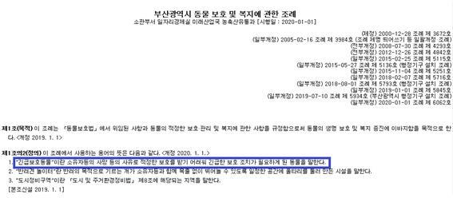
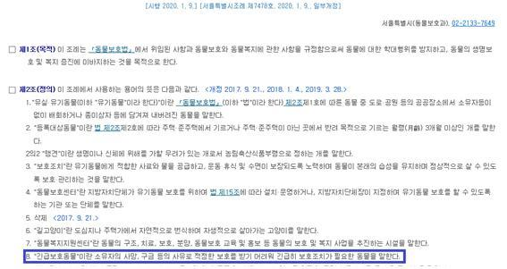
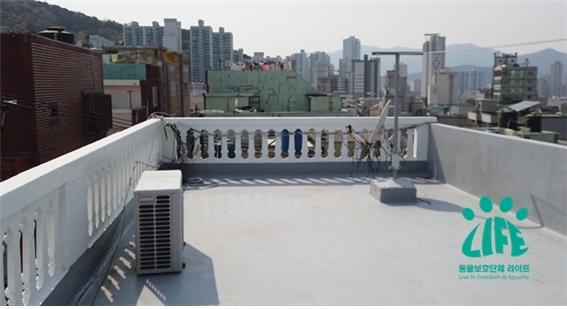

Carrie Left Alone by the Guardian's Illness
Registration Date Author Life Attachment activitydata_13_04{kind=link}
Last week, I got a call to the office asking me to save the cat.
According to the informant, 'My uncle who has a cat collapsed at home and is being treated in a hospital, and even when his condition recovers, he is unable to take care of the cat anymore because of his inability to move. So, I called the ward office and asked for help, but because it is an animal with a owner, there is nothing that the ward can do, so I asked the animal protection organization Life for help."
Administration: Active and active activities carried out to realize the national purpose under the law. One of the functions of national governance other than legislation and judiciary
The dictionary definition of administration. By definition, the Animal Protection Administration should be an active and active activity undertaken under the Animal Protection Act to promote the harmonious coexistence of humans and animals, including respecting the life of animals.
It is a pity that the municipality should have tried to resolve the reality of the cat's situation through discussions with animal protection groups directly about the complaint. The answer to 'There is a master and there is nothing the ward can do' was beyond regret and angry.
The Busan Metropolitan Municipal Council has proposed and passed a partial amendment to the "Ordinance on the Protection and Welfare of Animals in Busan Metropolitan City" and is coming into force on January 1, 2020. According to the ordinance, the mayor may set up and operate an "animal welfare support center" that performs the functions of acquisition, protection and distribution of emergency protected animals (which means animals that have become in need of urgent protective measures due to reasons such as the death of their owners, etc.), and that if installed and operated by the district commissioner, they may support a portion of the necessary expenses within the scope of the budget.
This provision of the ordinance has already been enacted not only in Busan Metropolitan City, but also in the city of Seoul, and in fact, the city of Seoul has been protecting emergency protected animals since 2018.
(서울시, 긴급보호동물 인수보호제 본격추진 http://v.media.daum.net/v/20180201073641058?f=o)
If there's nothing we can do right now, when can the administration do the job?
Do you recognize that there are things you can do if you actively implement administration?
How long should a private organization seek an understanding of its work from a public servant?
It's really frustrating.
I went to the rescue of a cat who was left alone. Carrie, a cat who thought she was living with a guardian in the house, was welcoming a stranger on the roof of a multi-family residential street in the perpetual mansion.
However, I had to take comfort in knowing that there was room to escape the rain. Still, it's a better environment compared to a stray cat, but I don't feel comfortable looking at Carrie.
When I look at the rotten and tattered cat tower, even the crying heart comes up.
Yes, it was better that he came to us. Let's stop leaving. So Carrie sniffed and headed to the hospital.
As a guy who continued to live outdoors, I was very worried that there might be a major disease, but fortunately there is no major disease. It seems like all you have to do is scale. After a few days of nursing care in the hospital, I have to be admitted to the office. There are swimming mausoleums from the same water perpetual in the office, so Carrie won't be lonely.
I'm seeing it for the first time in real life, but the hospital tells me it's a breed of cat called British Shorthair. Does it matter if it's a breed or not?
As long as there is a central government that only watches with their arms crossed in the reality of the buying and selling of lives, and as long as there are officials who are unwilling to carry out active administration despite the relevant legal provisions and systems, the sacrifices of animals born of human greed, whether it be breed cats, stray cats, sigorzab species, retrievers, or whatever, will only increase.
We will actively propose to the administrative organs including Busan City the system of acquiring emergency protected animals. Life will take the lead so that no animal is left alone and abandoned.
Good luck to Carrie Guardian